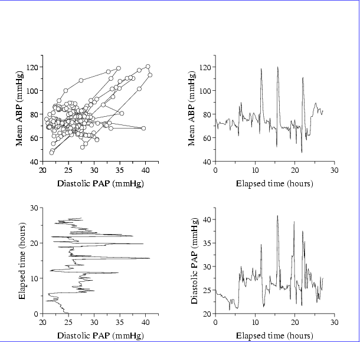

To create a LATEX document that includes plt figures, insert the line
\usepackage{epsfig}
at the top of the LATEX source file, after the \documentclass
statement.
Figure B.1
was generated using plt -T lw ... | lwcat -eps >fig.ps, and was included in this document using the commands
\begin{figure}
\begin{center}
\epsfig{file=fig}
\caption{File {\tt fig.ps}, ....}
\end{center}
\end{figure}
There is a problem here, because the figure doesn't fit between the LATEX margins. Both the figure and the first line of this caption are inside a center environment, but the figure begins at the left margin. (There are empty areas at both the left and right edges of the figure.) The caption is properly centered between the margins, but is not centered with respect to the figure.
Figure B.1 was drawn in its ``natural size'', and appears at the same scale (though not at the same location on the page) as it would appear if fig.ps were printed by itself. Figure B.2
|  |
\begin{figure}[h]
\begin{center}
\epsfig{file=fig,height=10cm}
\end{center}
\caption{This figure ....}
\end{figure}
The epsfig package allows a great deal of control over characteristics such as the aspect ratio (height and width may be scaled independently), the orientation, and the bounding box of the figure (which indirectly determines the amount of white space surrounding it).
Figure B.3 illustrates how this can be done, using the commands
\begin{figure}
\begin{center}
\epsfig{file=fig,height=8cm,width=12cm,angle=90}
\end{center}
\caption{A rescaled, stretched, and rotated figure.}
\end{figure}